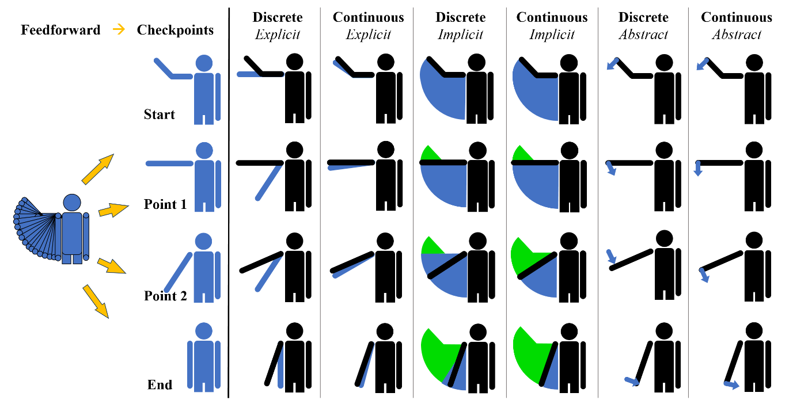

Design Space of Visual Feedforward And Corrective Feedback in XR-Based Motion Guidance Systems

Authors. Xingyao Yu, Benjamin Lee, Michael Sedlmair
Venue. CHI (2024) Full Paper
Type. Full Paper
Abstract. Extended reality (XR) technologies are highly suited in assisting individuals in learning motor skills and movements -- referred to as motion guidance. In motion guidance, the "feedforward" provides instructional cues of the motions that are to be performed, whereas the "feedback" provides cues which help correct mistakes and minimize errors. Designing synergistic feedforward and feedback is vital to providing an effective learning experience, but this interplay between the two has not yet been adequately explored. Based on a survey of the literature, we propose design space for both motion feedforward and corrective feedback in XR, and describe the interaction effects between them. We identify common design approaches of XR-based motion guidance found in our literature corpus, and discuss them through the lens of our design dimensions. We then discuss additional contextual factors and considerations that influence this design, together with future research opportunities for motion guidance in XR.